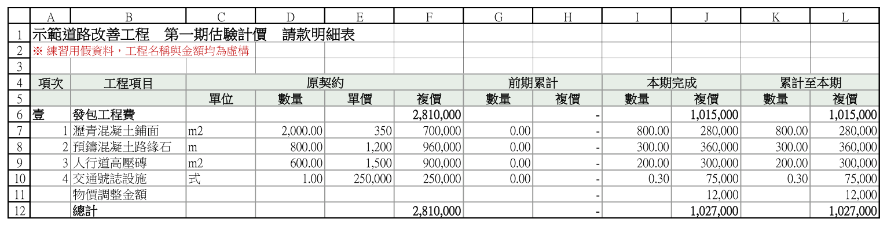
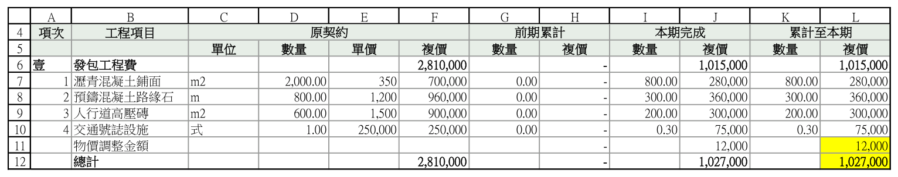
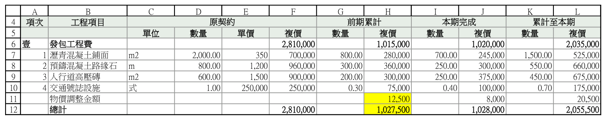
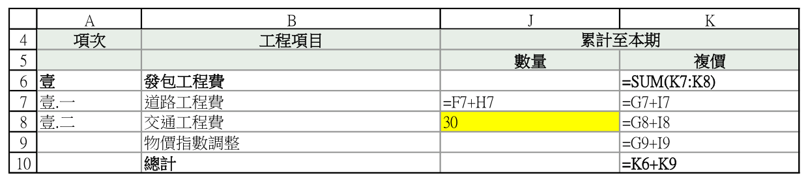
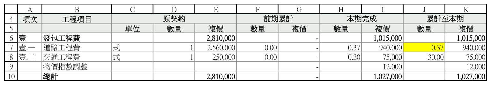
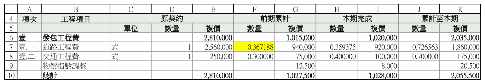

D:\320code\material-price-payment。1150301-第一期.xlsx、1150401-第二期.xlsx）。D:\320code\material-price-payment\examples\練習用-第一期估驗計價.xlsxD:\320code\material-price-payment\examples\練習用-第二期估驗計價.xlsx
把路徑換成你的檔案，一定要講清楚誰是前一期（順序反了，結果會全錯）。
兩期一起核的時候，每一份自己的「乘法」「加總」「小計」也會各核一次，報告會分別寫「（前一期）」「（本期）」，看得出錯在哪一份。
Claude 會把結果翻成白話，最後一定有一句結論。先看這句：
| 結論長這樣 | 意思 | 接下來 |
|---|---|---|
| 已跑的檢查全數相符，未發現異常 | 都對得起來 | 做第 5 步的檢核清單就完成 |
| 共發現 N 筆異常 | 有地方對不起來，下面會逐筆列出 | 做第 4 步 |
| ⚠ 有 N 項檢查因為欄位不齊沒跑到 | 有一項根本沒核，不是核過沒問題 | 那一項要人工看（見第 4 步狀況 D） |
| 無法核算：…… | 檔案路徑、分頁名稱打錯，或表格格式認不得 | 照訊息修正後重來；分頁名稱它會列給你照抄 |
核算報告會存在前一期檔案旁邊，檔名像 練習用-第一期估驗計價-計價總表-核算報告.md，每張分頁一份。
先記住一件事：好幾筆異常常常是同一個原因造成的。練習檔的計價總表報 8 筆，其實只有 3 個原因＋1 項沒核到。
到 Excel 確認時會用到的三個動作：
= 開頭才是公式。報告會出現「跨期銜接比對」異常：前一期的「累計至本期」和本期的「前期累計」不一樣。


判斷：物調和總計差額一樣（都是 500），是同一個原因，不是兩個問題。
處理：本期「前期累計」改成前一期的正確數字，請款明細表和計價總表兩張都要改。改之前先確認前一期的數字才是對的（例如有核定公文）。
報告會出現「前期累計＋本期完成＝累計至本期」異常，而且通常「跨期」和「畫面顯示」也會跟著報同一列。

=F7+H7，J8 卻是固定數字 30（應該是 0.3，把 30% 打成 30）判斷：金額對、數量錯，而且差很多，不像四捨五入 → 有人在公式格直接打了數字。
處理：把那格改回公式（照上一列的寫法，例：=F8+H8）。這一格改好，另外兩處的異常也會一起消失。
報告的「畫面顯示文字比對」會直接標出原因。標「格式不同（數字相同）」的，數字本身沒錯。


處理：不用改數字，把兩期同一欄的小數位數設成一樣（Ctrl＋1）。不統一的話，審查的人對照兩期紙本會以為數字對不起來。
計價總表通常沒有單價欄，「單價 × 數量 ＝ 複價」這項沒辦法核，報告會出現 ⚠。
處理：這一項改用人工抽查，或以請款明細表的核算結果為準。不能當成「核過沒問題」。
=A1+A2+A3 這種手動加總的小計。這些請人工驗算。Excel 改完存檔，回到第 2 步再核一次，直到結論是「全數正確」而且沒有 ⚠。最後照這張清單勾（可以印出來）：
用練習用範例檔照第 2 步跑，應該得到下面的結果。一樣就代表安裝正確、你也會看報告了。
| 分頁 | 結論 | 其實是幾個原因 |
|---|---|---|
| 請款明細表 | 共發現 4 筆異常 | 1 個：狀況 A（物調沒同步，連帶總計，各在「跨期」「畫面顯示」報一次） |
| 計價總表 | 共發現 8 筆異常＋2 項 ⚠ | 3 個原因＋沒核到的：狀況 A（4 筆）、狀況 B（3 筆，都在前一期那份）、狀況 C（1 筆）、狀況 D（⚠ 前一期、本期各 1 項） |
=== 核算結果 === - 單價 x 本期數量 = 複價（前一期）：⚠ 略過未檢查 — 缺少必要欄位（單價/數量/複價），略過此檢查 - 前期累計 + 本期完成 = 累計至本期（前一期）：共 5 項，異常 1 項 - 子項加總反查（前一期）：共 1 項，異常 0 項 - 單價 x 本期數量 = 複價（本期）：⚠ 略過未檢查 — 缺少必要欄位（單價/數量/複價），略過此檢查 - 前期累計 + 本期完成 = 累計至本期（本期）：共 5 項，異常 0 項 - 子項加總反查（本期）：共 1 項，異常 0 項 - 跨期銜接比對：共 5 項，異常 3 項 - 畫面顯示文字比對：共 5 項，異常 4 項，其中「格式不同（數字相同）」1 項（統一格式即可）、「數字不同」3 項（金額或數量要修正） 結論：共發現 8 筆異常。 ⚠ 但有 2 項檢查因為欄位不齊沒跑到（單價 x 本期數量 = 複價（前一期）、單價 x 本期數量 = 複價（本期）），不能回報「全部相符」。
| 輸出裡的字 | 意思 |
|---|---|
a_／b_ 開頭 | 前一期／本期的值 |
qty／amt | 數量／複價（金額） |
_ok: False、_match: False | 這一欄對不起來 |
exp_／tot_ | 照算式應該是多少／檔案裡實際寫多少 |
row | Excel 第幾列，可以直接去那一列看 |
cause | 畫面不一致的原因：「格式不同（數字相同）」或「數字不同」 |